СОНИ ЕНОКАЕВОЙ
ПРАКТИКА
ОПЕН-КОЛЛЫ / РЕЗИДЕНЦИИ
АРТ-РЫНОК

ТЕОРИЯ
ММКЯ, беседы на Cosmoscow и шестая часть курса по истории фотографии.
ПРАКТИКА
Рисунки дома у родителей, силуэтная история, конь, Cosmoscow и работа с мотоциклом.
ОПЕН-КОЛЛЫ / РЕЗИДЕНЦИИ
Garage, конкурс по китайской живописи, «Снизу ещё не постучали» и зин «Как я провёл лето».
АРТ-РЫНОК
ММКЯ, Cosmoscow и инфраструктура для «Шагающей галереи Сони Енокаевой».
РИСУНКИ И МАТЕРИАЛЫ НЕДЕЛИ
ОРИГИНАЛЬНЫЕ РАБОТЫ НЕ РЕДАКТИРУЮТСЯДОМА У РОДИТЕЛЕЙ
Огурцы и зелень, арбуз, Аська. Несколько рисунков карандашами и совместное рисование с братом.
СИЛУЭТНАЯ ИСТОРИЯ
После занятия с Люсей — продолжение работы с силуэтами, коллажами и трафаретной печатью. Отдельный лист — бильярд.
КОНЬ ЛЮТЫЙ
Лист был подготовлен больше месяца назад. Потом в нём неожиданно увиделась лошадь — и появилась быстрая дорисовка.
COSMOSCOW
Очень быстрые натурные зарисовки между павильонами: всё, что цепляло взгляд, собиралось на одном листе одной синей ручкой.
МОТОЦИКЛ
Смешанная техника: вырезанный силуэт, белый карандаш, фроттаж, перьевая ручка и карандаши.
ТЕОРИЯ
На ММКЯ слушала мастер-класс по сценарию комикса — или чего угодно. Это может пригодиться для моих историй.
На Cosmoscow послушала беседу о том, как ремесленники становятся художниками, и дискуссию про визионеров и тренды в искусстве.
Прохожу курс по истории фотографии от Вышки на «Открытом образовании». Он ёмкий и содержательный. Дошла до шестой части из десяти.
ОПЕН-КОЛЛЫ / РЕЗИДЕНЦИИ
Подала заявку в Garage в лабораторию по фотозину.
Подала заявку на конкурс по китайской живописи.
Готовлю проект под опен-колл «Снизу ещё не постучали», дедлайн — 15 сентября.
Параллельно делаю зин на конкурс «Как я провёл лето»: обрабатываю еженедельные итоговые отчёты в виде единой книги. Срок тоже 15 сентября.
АРТ-РЫНОК
Сходила на ММКЯ и на Cosmoscow, поняла что-то про себя и сделала об этом пост в Instagram.
Делала инфраструктуру на своём сайте для проекта «Шагающая галерея Сони Енокаевой».